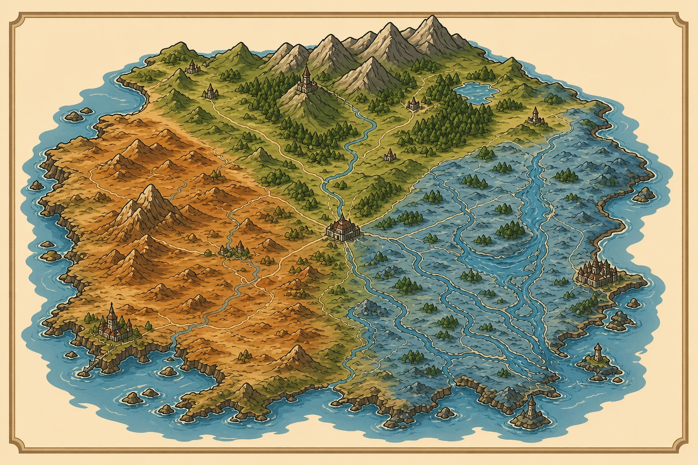
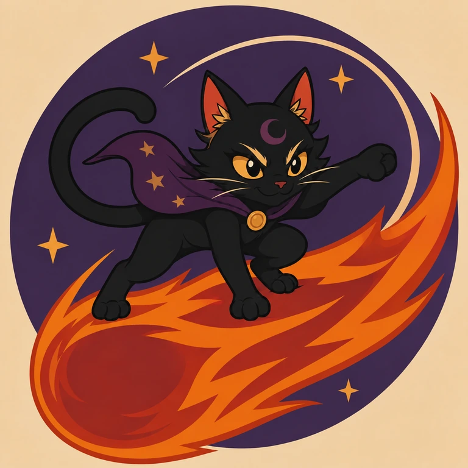
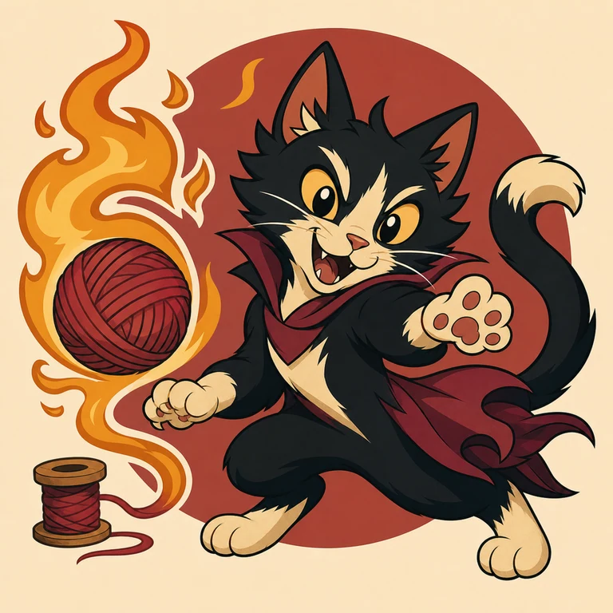
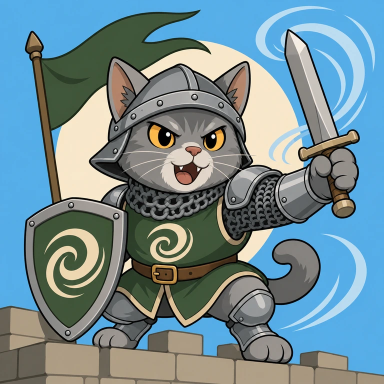
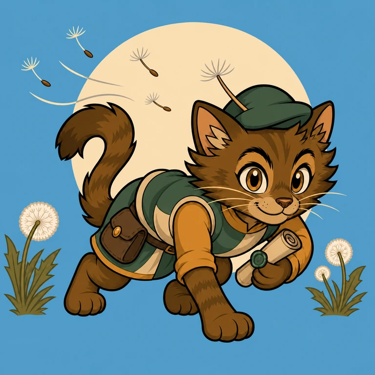
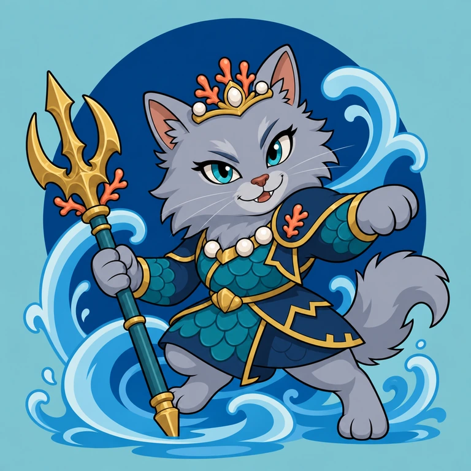
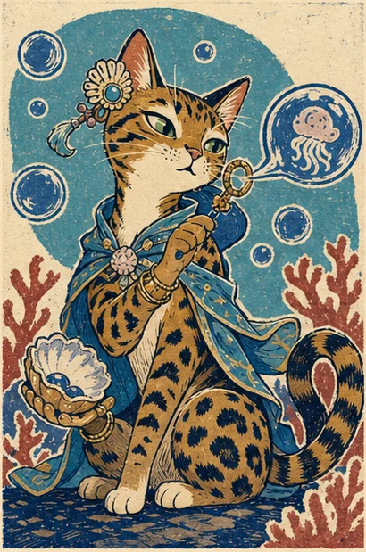
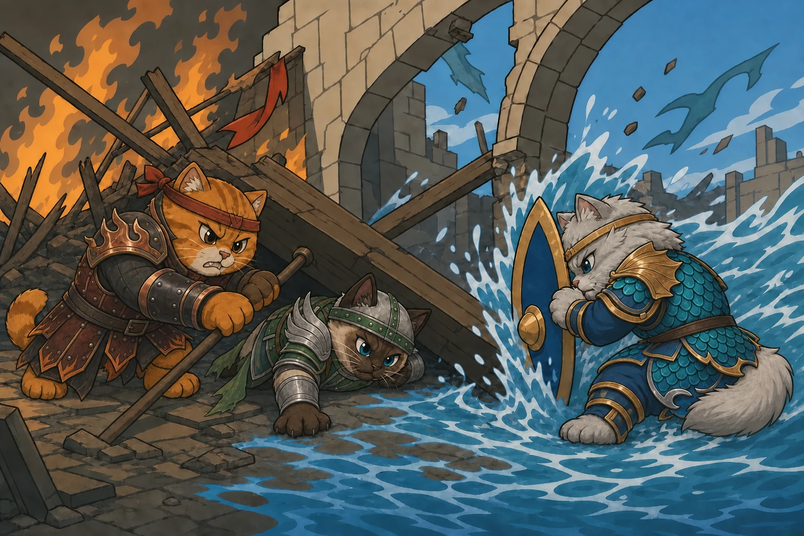
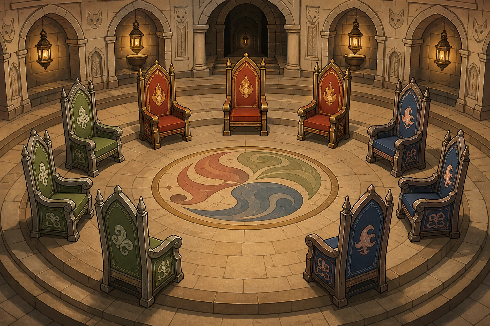

“No flame stands without air; no river travels without wind; no memory endures without change.”
Compiled at Ninefold Hall under the ninth moon of the present age
Book I · The Known Realm
Felden, the Threefold Realm
Felden is commonly drawn as one country. It has never behaved as one.
Three territories share its roads, rivers and oldest wounds. Hearthmarch keeps the western furnaces. Galecrest watches the northern heights. Moonmere holds the eastern deltas and the long coast below them.
Their borders meet at Ninefold Hall, where no crown is permitted to fly above another. Merchants call this meeting place the heart of Felden. Soldiers, less sentimentally, call it the hinge.
I

HearthmarchGalecrestMoonmereNinefold Hall
Plate I. A modern survey of Felden. Borders remain ceremonial in several disputed valleys.
II
Book II · Natural Philosophy
The Living Cycle
The elements are not kingdoms in the soil. They are habits of the world.
Ember transforms. Gust carries. Tide preserves and reshapes. Every settlement depends upon all three, even where one is honoured above the others.
Scholars disagree on whether the elements possess intention. A flame leans toward air; a river remembers its course; a wind returns to a familiar pass. Whether this is thought or merely nature remains a favourite argument of comfortable academics.
Balance was never stillness. It was movement held in trust.
Its danger is preserving what should have changed.
Plate II. The three philosophies as rendered in the Hall of Accord.
IV
Book III · The Western Furnaces
Hearthmarch
Hearthmarch announces itself first by warmth, then by noise.
Its brick cities climb around furnaces older than their ruling houses. Glass roofs catch the afternoon sun, beacon towers speak across the hills, and public arguments are conducted with the enthusiasm of festivals.
Its people admire invention and emotional honesty. A grievance spoken is considered repairable; a grievance hidden is treated with suspicion.
Yet conviction has its shadow. Hearthmarch has produced Felden’s boldest reformers—and many of the commanders who prolonged the Severed War.
V

Comet ClawAstronomer, trespasser and inconvenient witness.

Sizzle MittensMaster of the fireproof looms.Candle PounceKeeper of the western lights.
Plate III. Three contemporary figures of Hearthmarch. All are believed to be living at the time of publication.
VI
Book IV · The Northern Heights
Galecrest
Galecrest is joined less by roads than by agreements not to look down.
Rope bridges, wind lifts and narrow ridgeways connect its forest settlements to citadels cut into the mountains. Couriers and millers are afforded the respect other realms reserve for nobles, for both keep isolated communities alive.
Galecrest prizes independence, quick judgement and the freedom to change one’s course. Its oldest dispute concerns how much discipline freedom can endure before it becomes obedience.
Sir Squall has become the living centre of that argument.
VII

Sir SquallKnight-commander of the high roads.Gale GroomerCaptain of the scattered watch.

Dandelion DashCourier of the unofficial paths.
Plate IV. Defenders and messengers of Galecrest, where information often travels faster than law.
VIII
Book V · The Eastern Waters
Moonmere
Moonmere builds downward, as though history were a foundation one could visit.
Its canal cities stand above flooded streets from earlier ages. Libraries descend below the waterline behind gates maintained with ceremonial care. Records are treated not as possessions, but as obligations to those who cannot speak.
Its people esteem patience, memory and collective responsibility. Outsiders often mistake restraint for coldness. Moonmere’s inhabitants might answer that a river does not cease moving because its surface appears calm.
IX

Empress EbbSovereign and guardian of the drowned archive.Puddle PouncerScout of the shifting waterways.

Bubble BengalPerformer between courts.
Plate V. The court and its less official eyes. Moonmere has always valued more than one kind of witness.
X
Book VI · A Disputed History
The War of the Severed Cycle
No territory agrees on who began the war. This is the first fact every honest history must preserve.
Hearthmarch records an attack upon its western beacons. Galecrest remembers soldiers crossing a pass that had never accepted borders. Moonmere’s oldest surviving ledger begins three weeks later with a single line: The river is carrying ash.
The conflict endured until victory had lost any useful meaning. Crops failed beyond the battlefields. Winds carried furnace smoke across Felden. Floodgates were opened against towns that no longer housed armies.
Nine survivors eventually met without banners. What they promised there became the Accord.
XI

Plate VI. No surviving account names a victor. Later artists instead depicted the moment Felden itself became the casualty.
Year 0
The First Crossing
A failed beacon turns a border crossing into the war’s first battle.
Year 4
The Ashen Rains
Shared systems become weapons, spreading destruction across the realm.
Year 7
The Bannerless Meeting
Trapped enemies save one another and choose nine voices for peace.
Year 8
The Accord
The territories end the war and create rules to prevent another one.
ARCHIVAL ABSENCE
Testimony covering the final winter remains sealed by unanimous order of the first Circle.
XII
Book VI · Leaves from the Public Record
The Severed Years
The war lasted eight years. Historians divide it into four main stages. This is what happened, in order.
Year 0
The First Crossing
How the war began
A warning beacon beside a causeway shared by all three territories suddenly failed. A Galecrest patrol crossed the marked border to investigate. Hearthmarch guards mistook the crossing for an invasion and confronted them. Moonmere wardens then closed the nearby watergates to contain the fighting, accidentally trapping both forces.
Each territory received a different report. Galecrest heard that its patrol had been attacked. Hearthmarch heard that its border had been invaded. Moonmere heard that both armies threatened its waterways. All three sent reinforcements, and each believed it was acting in defence. The misunderstanding became the war’s first battle.
Year 4
The Ashen Rains
How the war harmed everyone
By the fourth year, all three territories were using Felden’s shared systems as weapons. Hearthmarch sent smoke into the wind. Galecrest redirected storms. Moonmere opened floodgates to destroy roads and crossings.
Ash mixed with the rain and fell across the realm, far beyond the battlefields. Farms, homes and reservoirs turned black. Civilians now understood that the war was harming everyone, no matter where they lived.
XIII
Book VI · From Ruin to Accord
The War’s Ending
Year 7
The Bannerless Meeting
How peace began
A disaster trapped soldiers from all three territories inside a ruined border hall. Instead of continuing to fight, they worked together to move fallen beams, stop the flooding and rescue the wounded. This became the war’s first true truce.
After the rescue, the survivors chose three trusted members from each territory to speak for them. These nine returned to the hall without flags or military symbols. Together, they cared for the ruin and buried every fallen soldier equally before beginning peace talks. What happened during their first four days was never officially recorded.
Year 8
The Accord
How the war ended
The Accord ended the war without naming a winner or blaming one territory for starting it. It protected shared roads, waterways and warning towers from future armies. It also made Ninefold Hall neutral ground and gave Ember, Gust and Tide equal voices in a permanent Circle.
Most soldiers returned home. From then on, disputes would be heard by representatives from all three territories before they could become another war. However, the Circle sealed all testimony about the war’s final winter, leaving part of the truth unknown.
XIV
Book VII · The Accord
The Circle of Nine Lives
The Circle governs no territory. Nevertheless, every territory has learned to fear its silence.
Three seats answer to Ember, three to Gust and three to Tide. Together they mediate disputes, maintain shared roads, preserve dangerous histories and train envoys capable of crossing borders without carrying a crown’s authority.
Ninefold Hall is their seat and Felden’s neutral ground. Its public chambers are crowded with petitioners, apprentices and visiting scholars. Its lower chambers do not appear on any approved plan.
The Circle’s seal promises impartiality. It does not promise honesty.
XV

IX
“Let no single flame, current or wind name itself the whole world.”
3
Voices of Ember
3
Voices of Gust
3
Voices of Tide
Plate VI. The council chamber of Ninefold Hall. Its open centre represents authority intentionally left unclaimed.
XVI
Book VIII · Addendum, Present Age
The Present Age
This edition closes during a season of small impossibilities.
HearthmarchSeven beacon flames observed producing light without warmth.
GalecrestThe western lift remained still beneath a documented northern gale.
MoonmereA sealed pool repeated testimony one day before it was given.
The Circle considers these events unrelated. This archivist records that sentence only because someone has taken considerable care to make it official.
XVII
Professor PawsGrandmaster · Examiner · HistorianPawcadetApprentice · Border-born · Unaffiliated
CIRCLE OF NINE LIVES · INTERNAL ROUTING
PROJECT: PROWL
PUBLIC COPY ENDS HERE
Final plate. Two names recur in correspondence removed from the public archive.
XVIII
DUEL MENU
The duel is paused
Restarting, changing difficulty, or returning to the main menu will end this duel.